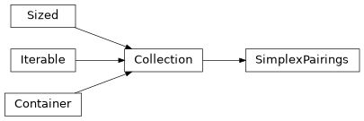
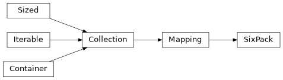

chalc.sixpack.types¶
Implementation of a 6-pack of persistence diagrams.
Classes¶
Persistence diagram represented by paired and unpaired simplices. |
|
6-pack of persistence diagrams. |
Module Contents¶
- class SimplexPairings(paired: collections.abc.Collection[tuple[int, int]] = frozenset(), unpaired: collections.abc.Collection[int] = frozenset())¶
Bases:
collections.abc.CollectionPersistence diagram represented by paired and unpaired simplices.
- __contains__(feature: object) bool¶
Return true if a feature is in the diagram.
The feature to check should be either a pair of simplices (int, int) or a single simplex (int).
- class SixPack(
- kernel: SimplexPairings | None = None,
- cokernel: SimplexPairings | None = None,
- domain: SimplexPairings | None = None,
- codomain: SimplexPairings | None = None,
- image: SimplexPairings | None = None,
- relative: SimplexPairings | None = None,
- entrance_times: collections.abc.Sequence[float] = [],
- dimensions: collections.abc.Sequence[int] = [],
Bases:
collections.abc.Mapping6-pack of persistence diagrams.
- __getitem__(key: DiagramName) SimplexPairings¶
Access a specific diagram in the 6-pack.
- __iter__() collections.abc.Iterator[DiagramName]¶
Iterate over all diagrams in the 6-pack.
- property dimensions: numpy.ndarray[tuple[int], numpy.dtype[numpy.int64]]¶
Dimensions of the simplices.
- property entrance_times: numpy.ndarray[tuple[int], numpy.dtype[numpy.float64]]¶
Entrance times of the simplices.
- filter(func: collections.abc.Callable[[str, int, float, float], bool]) SixPack¶
Filter out features in the diagram.
funcshould take four arguments: the name of the diagram to which a feature belongs, the dimension of the feature, and its birth and death times, and should return a boolean indicating whether the feature should be kept.
- classmethod from_file(file: h5py.Group) SixPack¶
Load a 6-pack of persistence diagrams from a HDF5 file or group.
- Parameters:
file – A h5py file or group.
- get_matrix(diagram_name: DiagramName, dimension: int) numpy.ndarray[tuple[int, Literal[2]], numpy.dtype[numpy.float64]]¶
- get_matrix(
- diagram_name: DiagramName,
- dimension: collections.abc.Sequence[int] | None = None,
Get a specific diagram as a matrix of birth and death times.
- Parameters:
diagram_name – One of
'ker','cok','dom','cod','im', or'rel'.dimension – Dimension(s) of the diagram desired. If a list is provided then a list of matrices is returned, with the order of matrices respecting the order of entries of dim. If dimension is not provided then the returned matrix will contain persistent features from all homological dimensions from zero to
max(self.dimensions).
- Returns:
An \(m \times 2\) matrix whose rows are a pair of birth and death times, or a list of such matrices.
- items() collections.abc.ItemsView[DiagramName, SimplexPairings]¶
View of the diagrams in the 6-pack.
- keys() collections.abc.KeysView[DiagramName]¶
View of the names of the diagrams in the 6-pack.
- max_nonempty_dimension() int¶
Get the maximum dimension of features across all diagrams.
Returns -1 if there are no features in the 6-pack.
- save(file: h5py.Group) None¶
Save a 6-pack of persistence diagrams to a HDF5 file or group.
- Parameters:
file – A h5py file or group.
- values() collections.abc.ValuesView[SimplexPairings]¶
View of the diagrams in the 6-pack.